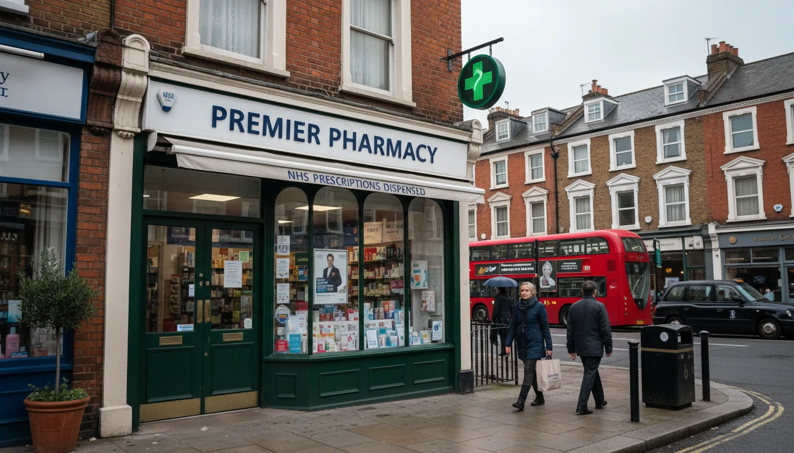

בריאות בלונדון למשפחות ישראליות - מה לסדר מראש בבית השני
מערכת הבריאות בלונדון - מה לדעת לפני שהמשפחה מגיעה
בית שני בלונדון זה משפחה שבאה והולכת - סוף שבוע, חופש אביב, שלושה שבועות באוגוסט, פסח, חנוכה. באחד הביקורים האלה מישהו יצטרך רופא. חום שלא יורד, נקע בפארק, סבתא ששכחה תרופות בארץ, מיגרנה שלא מרפה. בישראל אתם יודעים מה עושים ברגע כזה. בלונדון - לא.
זה לא מסובך. רוב המערכת חינמית וזמינה לכולם, גם לאנשים שאינם תושבי קבע - 111, walk-in, מיון עובדים מיידית, בלי רישום ובלי תעודת זהות בריטית. הבעיה היחידה היא שהיא בנויה אחרת ממה שאתם מכירים, ושהיא לא נראית מאליה כשמישהו חולה. מה שצריך זה לסדר את זה פעם אחת - לשים את הכתובות הנכונות על המקרר, לדעת למה לחייג ראשון - וזה שקט לכל הביקורים הבאים.
רישום אצל רופא משפחה אפשרי גם לאנשים שאינם תושבי קבע, בלי דרכון בריטי ובלי הוכחת כתובת. אבל לשהייה של שלושה שבועות אין בזה טעם: המרפאה סגורה בלילה ממילא, הפניה לפדיאטר לוקחת שבועות, והצורך המיידי לא נפתר דרך רישום. מי שבא לחודשים ארוכים או צריך מרשם קבוע - כן להירשם. כל השאר יסתדרו בלי.
מה לסדר בדירה לפני הביקור הראשון
לפני שעולים על הטיסה הראשונה עם הילדים, שווה לסדר ארבעה דברים. חמש דקות של עבודה, שנים של שקט נפשי.
- המיון הקרוב לדירה - שמרו את השם והכתובת על המקרר ובטלפון. הטבלה למטה מראה לפי שכונה
- בית המרקחת הקרוב - הכי טוב אחד שפתוח גם בסופי שבוע
- 111 שמור באנשי קשר - שלוש ספרות, חינם, 24/7
- אם אתם בצפון מערב לונדון: Hatzolah שמור גם הוא - 0300 999 4 999
זה הכל. לשהייה קצרה עם המשפחה, כל השירותים האלה זמינים לכם בלי להירשם מראש ובלי ניירת - הם בנויים בדיוק לזה.
מישהו חולה באמצע הביקור - הזרימה הפשוטה
בישראל הכל הולך למיון: חום, הקאה, נפילה מהנדנדה. בלונדון המיון הוא באמת רק לחירום אמיתי, ובאמצע יש מערכת שלמה שישראלים לא מכירים. ברוב המקרים הטיפול מתחיל ונגמר בשיחה ל-111 או בביקור ב-walk-in.
| לאן | מתי | עלות |
|---|---|---|
| NHS 111 | כל שאלה רפואית - להתקשר קודם | חינם, 24/7 |
| walk-in centre | חתכים, חום, זיהומים, כאבי בטן | חינם |
| רופא עד הבית פרטי | בלילה כשהמרפאות סגורות והמצב לא חירום | 450-700 פאונד |
| מיון | שברים פתוחים, קשיי נשימה, אלרגיה חמורה, פגיעת ראש | חינם לכולם |
קודם כל: NHS 111. מתקשרים ל-111 (חינם, 24/7, כולל שבת ושישי) או נכנסים ל-111.nhs.uk. עונים על שאלות על הסימפטומים, ומקבלים הכוונה מדויקת: להישאר בבית עם פרצטמול, לנסוע ל-walk-in centre, או להגיע למיון. אם צריך, הם מזמינים אמבולנס. לא צריך רישום ל-NHS, לא צריך מספר - פשוט מתקשרים. באתר יש גם אפשרות לצ'אט. יש שירותי תרגום אם האנגלית לא חזקה מספיק לתאר סימפטומים רפואיים.
לטיפול לא דחוף - שתי אפשרויות. כש-111 מכוונים לטיפול לא דחוף (חום, דלקת, נקע, חתך), יש שתי אפשרויות לבחור ביניהן לפי הנסיבות:
- Urgent Treatment Centre / walk-in centre (NHS, חינם). פתוחים לפחות 12 שעות ביום, כל יום. מטפלים בשברים, חתכים, זיהומים, חום, כאבי בטן, נקעים - רוב מה שישראלים נוסעים איתו למיון. צילומי רנטגן, בדיקות דם, מרשמים. בלי תור, בלי רישום, בלי כתובת קבועה.
- רופא פרטי עד הבית (בתשלום, 24/7). שתיים בלילה, הילד בוער מחום, ה-walk-in סגור עד הבוקר, לא נראה לכם מצב למיון? בלונדון יש שירותי רופא פרטי שמגיעים לדירה. Doctorcall הוא הגדול והיחיד עם מחירון מפורסם - ביקור לילי במרכז לונדון סביב 450-500 פאונד אחרי תוספת לילה וסוף שבוע. יש גם The London Clinic באותו טווח או יותר. מגיעים תוך 90 דקות, עם תרופות בתיק, רושמים מרשם במקום. לא זול, אבל פותר לילות שלמים של חוסר ודאות.
למיון - רק חירום אמיתי. שברים פתוחים, קשיי נשימה, אלרגיה חמורה, פגיעת ראש, חשד לשבץ. חינם לכולם, גם למי שלא רשום ל-NHS - אבל רק עד נקודת האשפוז. אם מאשפזים, בודקים זכאות. בכל מקרה אחר, 111 קודם. זה חוסך שעות המתנה ונותן טיפול מדויק יותר.
אם אתם בצפון מערב לונדון: Hatzolah. שירות מתנדבים יהודי שמגיע מהר, לרוב תוך דקות, עם ציוד להחייאה, ציוד רפואי ואמבולנסים משלהם במקרה הצורך. פעיל בגולדרס גרין, הנדון, פינצ'לי, מיל היל, המפסטד גארדן סובורב, צ'יילדס היל וטמפל פורצ'ן. הטלפון: 0300 999 4 999. השירות חינם, לכולם באזור, לא רק יהודים. בשאר לונדון (מרילבון, סנט ג'ונס ווד, נוטינג היל, קנזינגטון) - אין כיסוי.
רופא ילדים - איך מגיעים לפדיאטר בלונדון
ב-NHS אין דבר כזה "לקבוע תור אצל רופא ילדים". רופא המשפחה הוא רופא הילדים שלכם לרוב הדברים - חום, אוזניים, שיעול, פריחה. רוב רופאי המשפחה מאומנים היטב עם ילדים ומזהים את מה שצריך להפנות. בשביל 90% מהמקרים הם מספיקים.
כשצריך פדיאטר, רופא המשפחה כותב הפניה (referral) ואתם מקבלים תור ב-NHS. זמן ההמתנה תלוי בדחיפות - דברים דחופים תוך שבועיים, אחרים שבועות עד חודשים. אם זה לא מתאים ללוח הזמנים של ביקור של שלושה שבועות, האלטרנטיבה היא פדיאטר פרטי - בלי הפניה, תור תוך ימים. פגישה ראשונה 200-350 פאונד, המשך 150-250. ייעוץ מומחה ספציפי (אלרגיה, ADHD, הפרעות שינה) 300-600.
מה שווה לשלם ומה לא
השאלה הנכונה היא לא "NHS או פרטי", אלא איך משתמשים במערכת בחוכמה לתבנית הביקורים שלכם.
רופא משפחה פרטי שווה כשצריך מהר. תור לאותו יום, בלי המתנה להפניה. אותו דבר למומחים - פדיאטר, אלרגיסט, אורתופד - ישר לפגישה. שווה כשמישהו צריך מומחה ספציפי במהלך שהייה קצרה שלא תחכה לתור ב-NHS. לכל השאר, walk-in של ה-NHS או 111 מספיקים.
אופציית ביניים ששווה לזכור: ה-Urgent Care בבית החולים Hospital of St John and Elizabeth (מוכר בקיצור HJE) בסנט ג'ונס ווד. אל תבלבלו עם השם שנשמע קתולי - זה בית חולים פרטי רגיל עם כל השירותים, רק שנוסד על ידי נזירות במאה ה-19 ושמר על השם. walk-in בלי תור מגיל שנה, 70 פאונד אצל אחות מוסמכת, 130 פאונד אצל רופא. פתוח ימי חול 08:00-20:00 ובסופי שבוע 08:00-18:00. מטפלים בחום, שיעול, דלקות אוזניים, חתכים, שברים, זיהומים בדרכי השתן - כל מה שהיה הולך ל-walk-in של ה-NHS, רק בלי התור. חשוב: זה לא מיון. כאב בחזה, פגיעת ראש, קשיי נשימה - לא שם, למיון. ולא פתוח בלילה.
בתי מרקחת - מה אפשר לסגור שם בלי רופא משפחה

ה-NHS מפעיל תוכנית שנקראת Pharmacy First, שבה רוקח מוסמך יכול לטפל בשבע בעיות נפוצות ולרשום תרופת מרשם (כולל אנטיביוטיקה אם צריך) בלי שתגיעו לרופא משפחה. זה לא כוח כללי - רק הרשימה הזו:
- דלקת אוזניים (acute otitis media) - גילאים 1-17
- כאב גרון - מגיל 5 ומעלה
- זיהום בעקיצת חרק - מגיל שנה ומעלה
- אימפטיגו - מגיל שנה ומעלה
- שלבקת חוגרת (shingles) - מגיל 18 ומעלה
- סינוסיטיס - מגיל 12 ומעלה
- זיהום דרכי שתן לא-מסובך - נשים 16-64
אם מה שיש לכם ברשימה - לכו לרוקח, זה בחינם ובלי תור. לכל דבר אחר - שיעול, חום סתמי, פריחה - הרוקח לא ירשום, אבל יוכל להמליץ על תרופות ללא מרשם, ולומר לכם אם כדאי להתקדם לרופא משפחה או ל-walk-in.
ילדים מתחת לגיל 16 מקבלים תרופות מרשם בחינם. מבוגרים משלמים 9.90 פאונד למרשם, בלי קשר לתרופה.
המיון הקרוב לפי שכונה
אם אמבולנס מגיע, הוא יחליט לאן. אם אתם נוסעים לבד, זה מה שיש:
| שכונה | מיון קרוב |
|---|---|
| גולדרס גרין / המפסטד | Royal Free (המפסטד) |
| סנט ג'ונס ווד / מיידה וייל | St Mary's (פדינגטון) |
| מרילבון / פרימרוז היל / קאמדן | University College Hospital (יוסטון) |
| נוטינג היל | St Mary's (פדינגטון) |
| צ'לסי / סאות' קנזינגטון | Chelsea and Westminster |
בכל בתי החולים האלה יש מחלקות ילדים פעילות. Great Ormond Street הוא בית החולים הגדול לילדים בלונדון, אבל עובד בהפניה בלבד - לא מגיעים לשם מהרחוב, מגיעים אחרי שרופא אחר הפנה. שווה לשמור את הכתובת והטלפון של המיון הקרוב בתור פתק על המקרר.
ביטוח - מה באמת מכסה את המשפחה
הביטוח שרלוונטי למשפחה עם בית שני בלונדון זה ביטוח הנסיעות הישראלי שממילא קונים לטיסה - פספורטכארד, הראל, שירביט וחבריהם. הוא מכסה מקרי חירום רפואיים: מישהו שנפל ושבר יד, אשפוז בעקבות אלרגיה חמורה, פגיעת ראש. הוא לא מכסה ביקור שגרתי אצל רופא משפחה כי מישהו משתעל שבוע. ביטוח נסיעות בנוי למקרים חריגים, לא לרפואה שוטפת. תקראו את האותיות הקטנות לפני שמגיעים.
כלל אצבע: לא חייבים לטלפן למוקד הביטוח לפני טיפול בחירום אמיתי. מגיעים למיון, מתקשרים אחר כך.
- לפני הביקור הראשון: שמרו את שם המיון הקרוב, בית מרקחת קרוב, 111, ו-Hatzolah אם אתם ב-NW לונדון
- מישהו חולה: 111 קודם. חינם, 24/7, אומרים לכם לאן ללכת
- חום, דלקות, חתכים, נקעים - walk-in של NHS או Urgent Care של HJE (70-130 פאונד, סנט ג'ונס ווד)
- שתיים בלילה והמרפאות סגורות - רופא עד הבית דרך Doctorcall וחבריו, 450-700 פאונד
- מיון רק לחירום אמיתי - שבר פתוח, קשיי נשימה, פגיעת ראש. חינם לכולם
- פדיאטר פרטי לשהיות קצרות - בלי הפניה, תור תוך ימים, 200-350 פאונד
- ב-NW לונדון Hatzolah מגיע תוך דקות עם ציוד החייאה ואמבולנסים - 0300 999 4 999
- בתוכנית Pharmacy First רוקח יכול לטפל בשבע בעיות נפוצות (דלקת אוזניים, כאב גרון, UTI ועוד) ולרשום מרשם במקום. לילדים עד 16 - חינם
- רישום אצל רופא משפחה אפשרי גם לאנשים שאינם תושבי קבע אבל לרוב לא שווה את הטרחה לשהייה קצרה. ביטוח נסיעות ישראלי מכסה חירום, תשלום מכיס לכל השאר